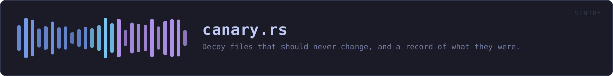

crates/veilvoice-sentry/src/canary.rs
veilvoice-sentry · 761 lines · read the source here · or on GitHub
Decoy files that should never change, and a record of what they were.
The idea, in one paragraph
Put a file somewhere nothing legitimately writes, remember exactly what it contained, and look at it later. If it differs, something walked that directory and wrote to everything it found. That is a much cleaner signal than counting file changes, because there is no innocent explanation for a file nobody uses having been rewritten.
And the hole in it, which is large
A canary fires only if whatever is running reaches it. Something that encrypts .docx under one folder will never look at a canary planted anywhere else, and this crate has no way to tell "nothing happened" from "it happened somewhere I was not". A quiet canary is not an all-clear, and no wording in a front end may present it as one.
Plant several, in the directories that actually matter, and accept that the answer is still one-sided: a trip is evidence, silence is not.
The name is a deliberate trade, and the default takes the honest side
DEFAULT_NAME says what the file is. Anything that reads filenames before deciding what to encrypt can therefore skip it, and the signal is lost. A decoy called quarterly-report.docx would survive that.
The default is the recognisable name anyway, for two reasons. Indiscriminate encryption of everything under a directory is the overwhelmingly common case, and it is not fooled either way. And a file the user does not recognise is a file the user eventually deletes, which reads here as a trip, produces an alarm that was nobody's fault, and teaches them to ignore the next one. A warning system whose alarms are usually wrong is worse than no warning system.
Nest::plant takes a name, so anybody who wants the quieter trade can have it. It is a choice, made in the open, not a default that decides for them.
A deletion and an encryption look the same
Much ransomware writes a new encrypted file beside the original and deletes the original, so the canary comes back as State::Removed, which is also what a user tidying a folder produces. State reports which of the two happened to the file, never which of the two happened in the world.
Format
One record per line, text, for the same reason the tamper manifest is text: the point of the file is to be checkable without this crate.
VEILSENTRY-NEST1
<sha256 hex> <size> <planted unix seconds> <path>In plain words
Files VeilVoice puts in a folder and never touches again.
Nothing should ever read or change them. If one does change, something has walked through that folder writing to everything in it, which is what ransomware does, and you have found out early.
It does not stop anything. It is a tripwire, and its whole value is being noticed quickly.
WHAT THIS FILE CONTAINS
761 lines defining 20 functions (16 public), 4 types and 4 constants. Everything below is read out of the source, so it cannot disagree with the code.
The types it owns.
struct Canaryline 94 · One planted decoy, and what it was when it was planted.enum Stateline 107 · What a canary looks like now.struct Sightingline 177 · One canary and what became of it.struct Nestline 186 · The set of planted canaries.
What happens when it runs. These are the ways in: public, and nothing else in this file calls them, so they are what an outside caller reaches first.
State::is_tripline 134 · Whether this is anything other than State::Intact.State::stopped_being_textline 143 · Whether the contents stopped looking like the text that was planted.State::describeline 151 · A single line for a terminal or a log.Nest::newline 265 · An empty nest.Nest::lenline 270 · How many canaries are planted.Nest::is_emptyline 275 · Whether nothing is planted.Nest::canariesline 280 · The planted canaries, in a stable order.Nest::plantline 292 · Write a canary into dir and record it.
reachescontents,digest_of,normalise,now_secondsNest::pull_upline 340 · Stop watching a canary, and delete it.
reachesnormaliseNest::tripsline 366 · Only the canaries that are not intact.
reachescheck,state_of,digest_ofNest::saveline 446 · Write the nest to path.
reachesto_textNest::loadline 457 · Read a nest written by Nest::save.
reachesparse
WHAT CALLS WHAT
The functions this file defines, and the calls between them. An edge means the callee's name appears, called, inside the caller's body. This is a syntactic reading, not a type-resolved one.
The same graph as Mermaid source
%%{init: {"theme":"base","themeVariables":{"background":"#1a1b26","primaryColor":"#1f2335","primaryTextColor":"#c0caf5","primaryBorderColor":"#7aa2f7","secondaryColor":"#16161e","tertiaryColor":"#16161e","lineColor":"#737aa2","textColor":"#c0caf5","mainBkg":"#1f2335","nodeBorder":"#7aa2f7","clusterBkg":"#16161e","clusterBorder":"#2f3549","fontFamily":"ui-monospace, SFMono-Regular, Consolas, monospace","fontSize":"14px"}}}%%
flowchart TD
n_is_trip(["State::is_trip<br/>line 134"])
n_stopped_being_text(["State::stopped_being_text<br/>line 143"])
n_describe(["State::describe<br/>line 151"])
n_normalise["normalise<br/>line 195"]
n_digest_of["digest_of<br/>line 199"]
n_now_seconds["now_seconds<br/>line 209"]
n_contents["contents<br/>line 226"]
n_new(["Nest::new<br/>line 265"])
n_len(["Nest::len<br/>line 270"])
n_is_empty(["Nest::is_empty<br/>line 275"])
n_canaries(["Nest::canaries<br/>line 280"])
n_plant(["Nest::plant<br/>line 292"])
n_pull_up(["Nest::pull_up<br/>line 340"])
n_check["Nest::check<br/>line 355"]
n_trips(["Nest::trips<br/>line 366"])
n_to_text["Nest::to_text<br/>line 374"]
n_parse["Nest::parse<br/>line 387"]
n_save(["Nest::save<br/>line 446"])
n_load(["Nest::load<br/>line 457"])
n_state_of["state_of<br/>line 462"]
n_check --> n_state_of
n_load --> n_parse
n_plant --> n_contents
n_plant --> n_digest_of
n_plant --> n_normalise
n_plant --> n_now_seconds
n_pull_up --> n_normalise
n_save --> n_to_text
n_state_of --> n_digest_of
n_trips --> n_check
click n_is_trip href "https://github.com/tilas01/veilvoice/blob/main/crates/veilvoice-sentry/src/canary.rs#L134" "open the source"
click n_stopped_being_text href "https://github.com/tilas01/veilvoice/blob/main/crates/veilvoice-sentry/src/canary.rs#L143" "open the source"
click n_describe href "https://github.com/tilas01/veilvoice/blob/main/crates/veilvoice-sentry/src/canary.rs#L151" "open the source"
click n_normalise href "https://github.com/tilas01/veilvoice/blob/main/crates/veilvoice-sentry/src/canary.rs#L195" "open the source"
click n_digest_of href "https://github.com/tilas01/veilvoice/blob/main/crates/veilvoice-sentry/src/canary.rs#L199" "open the source"
click n_now_seconds href "https://github.com/tilas01/veilvoice/blob/main/crates/veilvoice-sentry/src/canary.rs#L209" "open the source"
click n_contents href "https://github.com/tilas01/veilvoice/blob/main/crates/veilvoice-sentry/src/canary.rs#L226" "open the source"
click n_new href "https://github.com/tilas01/veilvoice/blob/main/crates/veilvoice-sentry/src/canary.rs#L265" "open the source"
click n_len href "https://github.com/tilas01/veilvoice/blob/main/crates/veilvoice-sentry/src/canary.rs#L270" "open the source"
click n_is_empty href "https://github.com/tilas01/veilvoice/blob/main/crates/veilvoice-sentry/src/canary.rs#L275" "open the source"
click n_canaries href "https://github.com/tilas01/veilvoice/blob/main/crates/veilvoice-sentry/src/canary.rs#L280" "open the source"
click n_plant href "https://github.com/tilas01/veilvoice/blob/main/crates/veilvoice-sentry/src/canary.rs#L292" "open the source"
click n_pull_up href "https://github.com/tilas01/veilvoice/blob/main/crates/veilvoice-sentry/src/canary.rs#L340" "open the source"
click n_check href "https://github.com/tilas01/veilvoice/blob/main/crates/veilvoice-sentry/src/canary.rs#L355" "open the source"
click n_trips href "https://github.com/tilas01/veilvoice/blob/main/crates/veilvoice-sentry/src/canary.rs#L366" "open the source"
click n_to_text href "https://github.com/tilas01/veilvoice/blob/main/crates/veilvoice-sentry/src/canary.rs#L374" "open the source"
click n_parse href "https://github.com/tilas01/veilvoice/blob/main/crates/veilvoice-sentry/src/canary.rs#L387" "open the source"
click n_save href "https://github.com/tilas01/veilvoice/blob/main/crates/veilvoice-sentry/src/canary.rs#L446" "open the source"
click n_load href "https://github.com/tilas01/veilvoice/blob/main/crates/veilvoice-sentry/src/canary.rs#L457" "open the source"
click n_state_of href "https://github.com/tilas01/veilvoice/blob/main/crates/veilvoice-sentry/src/canary.rs#L462" "open the source"
classDef entry fill:#1f2335,stroke:#7aa2f7,color:#c0caf5
class n_is_trip,n_stopped_being_text,n_describe,n_new,n_len,n_is_empty,n_canaries,n_plant,n_pull_up,n_trips,n_save,n_load entry
classDef api fill:#1f2335,stroke:#7dcfff,color:#c0caf5
class n_contents,n_check,n_to_text,n_parse api
classDef helper fill:#1f2335,stroke:#bb9af7,color:#c0caf5
class n_normalise,n_digest_of,n_now_seconds,n_state_of helperThis site loads no third-party script, so it cannot run Mermaid; the diagram above is the same nodes and edges drawn by the generator instead. GitHub renders the source below directly.
ITEMS
| Item | Line | Documentation |
|---|---|---|
MAGIC const | 76 | Magic first line. |
DEFAULT_NAME pub const | 82 | The default filename for a canary. |
PROSE_CEILING pub const | 90 | Below this, a canary that was prose has stopped being prose. |
Canary pub struct | 94 | One planted decoy, and what it was when it was planted. |
State pub enum | 107 | What a canary looks like now. |
State::is_trip pub fn | 134 | Whether this is anything other than State::Intact. |
State::stopped_being_text pub fn | 143 | Whether the contents stopped looking like the text that was planted. |
State::describe pub fn | 151 | A single line for a terminal or a log. |
Sighting pub struct | 177 | One canary and what became of it. |
Nest pub struct | 186 | The set of planted canaries. |
normalise fn | 195 | Normalise a path for storage: forward slashes, as the tamper manifest does, so a nest written on Windows still reads on Linux. |
digest_of fn | 199 | |
now_seconds fn | 209 | |
contents pub fn | 226 | The text a canary is filled with. |
FILLER const | 255 | Plain sentences, in the project's own register, repeated to make a body. |
Nest::new pub fn | 265 | An empty nest. |
Nest::len pub fn | 270 | How many canaries are planted. |
Nest::is_empty pub fn | 275 | Whether nothing is planted. |
Nest::canaries pub fn | 280 | The planted canaries, in a stable order. |
Nest::plant pub fn | 292 | Write a canary into dir and record it. |
Nest::pull_up pub fn | 340 | Stop watching a canary, and delete it. |
Nest::check pub fn | 355 | Look at every canary. |
Nest::trips pub fn | 366 | Only the canaries that are not intact. |
Nest::to_text pub fn | 374 | Serialise to the text format described at the top of this module. |
Nest::parse pub fn | 387 | Parse the text format. |
Nest::save pub fn | 446 | Write the nest to path. |
Nest::load pub fn | 457 | Read a nest written by Nest::save. |
state_of fn | 462 |